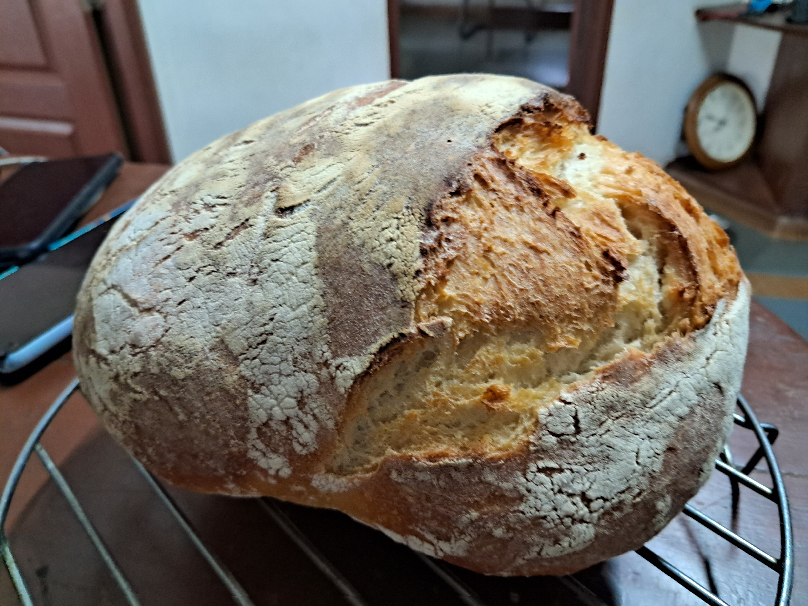

Sourdough Bread
Home
Ingredients
- 500g bread flour
- 350ml water
- 100g sourdough starter
- 10g salt
- Optional: seeds (e.g., white sesame, poppy)
- Optional: herbs (e.g., rosemary, thyme)
Instructions
- Mix the flour and water in a bowl until no dry flour remains.
- Add the sourdough starter and salt, and mix until well combined.
- Let the dough rest for 30 minutes (autolyse).
- Stretch and fold the dough every 30 minutes for 2-3 hours.
- Shape the dough and place it in a floured proofing basket.
- Let it proof for 4-12 hours at room temperature or overnight in the fridge.
- Preheat the oven to 230°C (450°F) with a Dutch oven inside.
- Carefully transfer the dough to the hot Dutch oven, score the top, and cover.
- Bake for 30 minutes covered, then remove the lid and bake for another 15-20 minutes until golden brown.
- Cool on a wire rack before slicing.
Notes
For a more complex flavor, consider using a mix of different flours (e.g., whole wheat, rye).
Experiment with different hydration levels for a more open crumb.
For a crustier loaf, bake on a pizza stone instead of in a Dutch oven.
Tips
- Use a kitchen scale for accurate measurements.
- Keep your sourdough starter healthy and active for best results.
- Practice patience; sourdough takes time to develop flavor and texture.
- Don't be afraid to experiment with different shapes and sizes of loaves.
Sourdough bread
